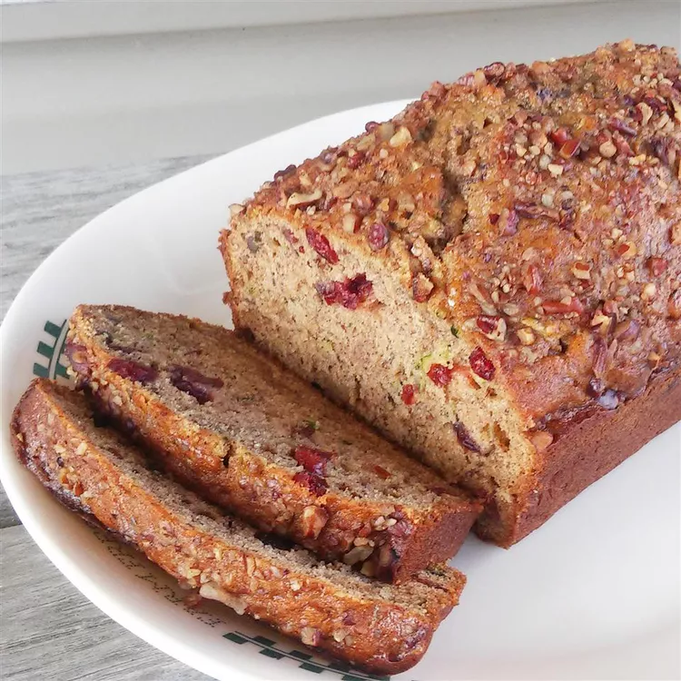

Banana Zucchini Bread

I'm not very good at cooking or baking myself, but I liked the idea of it so here we go.
Ingredients
- 3 Eggs
- Vegetable Oil
- Sugar
- Zucchini
- Bananas
- Vanilla Extract
- Flour
- Cinnamon
- Leaveners
- Salt
- Cranberries
- Walnuts
Steps
- Preheat the oven to 325 degrees F (165 degrees C). Grease and flour two 8x4-inch bread loaf pans.
- Beat eggs in a large bowl with an electric mixer until light yellow and frothy. Add white sugar, zucchini, oil,
bananas, brown sugar, and vanilla; beat until well combined. Stir in flour, cinnamon, baking powder, baking
soda, and salt. Fold in cranberries and nuts. Divide batter evenly between the prepared loaf pans.
- Bake in the preheated oven until a toothpick inserted into the center comes out clean, 45 to 50 minutes. Allow
to cool in the loaf pans on a wire rack before removing and serving.